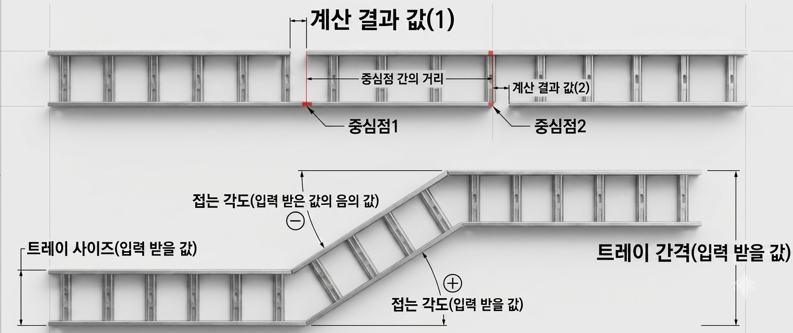

아이폰과 안드로이드에서 홈 화면에 추가한 뒤 인터넷 없이 사용할 수 있는 현장용 계산기입니다.
아이폰 사파리에서 이 페이지를 한 번 연 뒤 공유 버튼을 눌러 홈 화면에 추가하면 이후 오프라인으로 사용할 수 있습니다.
계산 결과
중심선으로 부터 좌, 우 0mm씩 절단하세요

공통 접는 각도와 트레이 간격을 입력해 2번 접기 절단값을 계산합니다.
최종 각도
180도
절단점 1
절단점 1은 중심점에서 좌우로 0mm 잘라내야 합니다.
절단점 2
절단점 2는 중심점에서 좌우로 0mm 잘라내야 합니다.
중심점 간 거리
평행 180도 모드에서 계산됩니다.